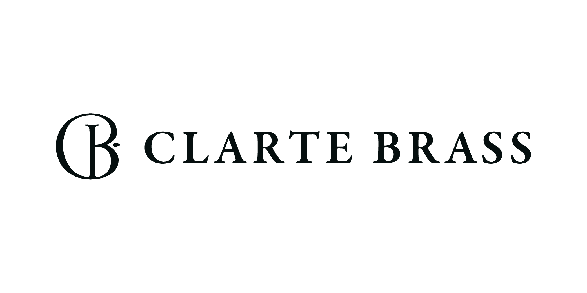
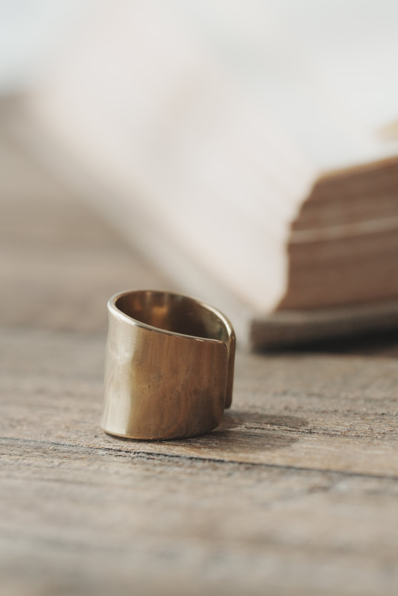
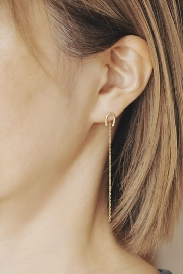
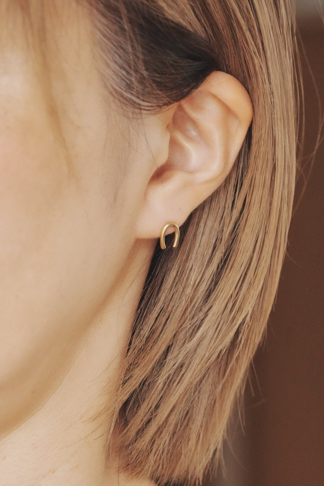
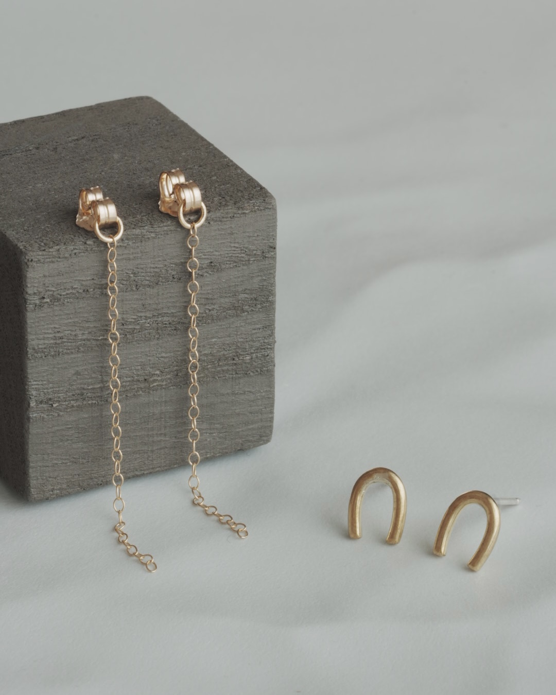
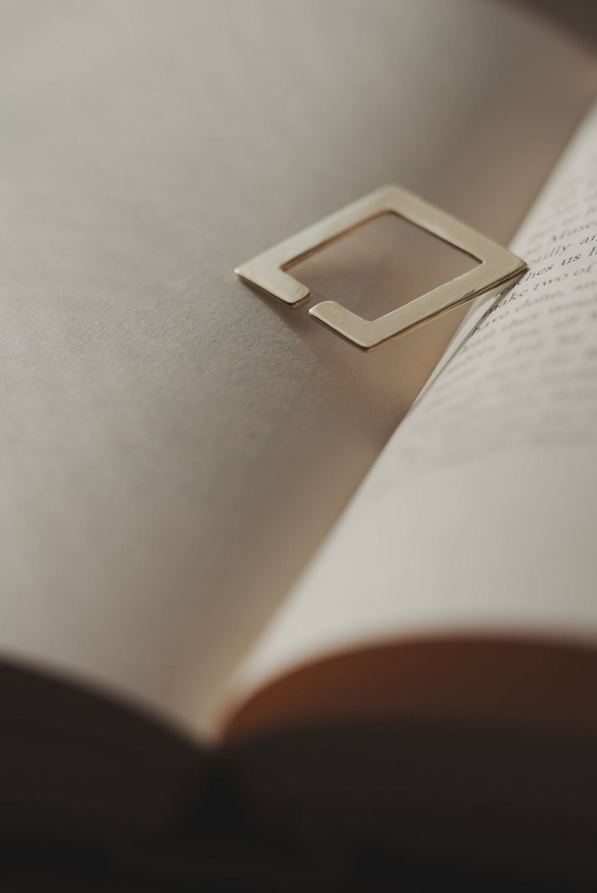
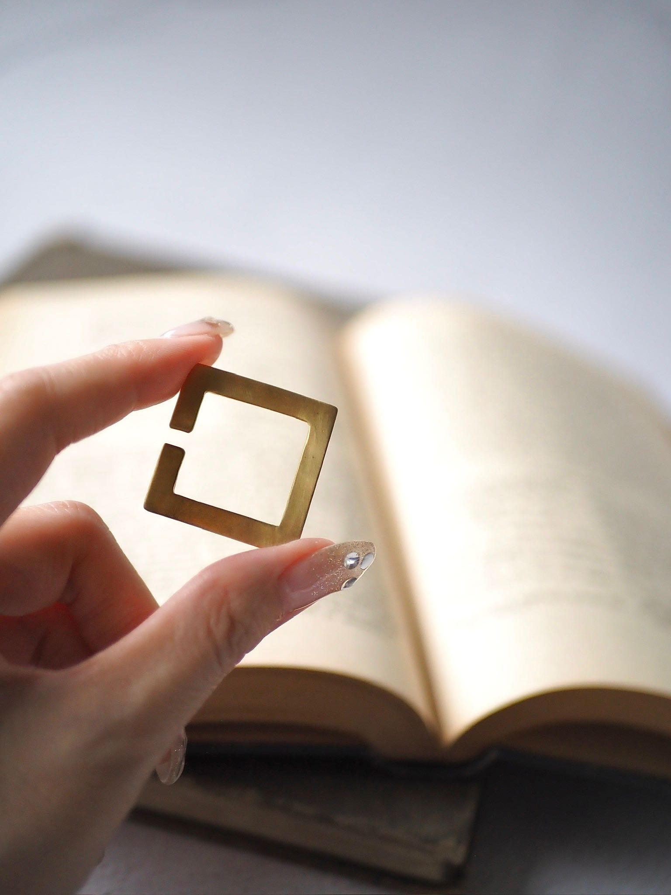

Brass
真鍮
時間とともに色が深まり、落ち着いた風合いへ変化します。磨けば再び輝き、使う人の時間が表面に刻まれていきます。


HANDCRAFTED JEWELRY / OSAKA
真鍮とシルバー。
使うほど、その人だけの表情へ。
2026.10.31 SAT — 11.01 SUN
京都市京セラ美術館
CLARTE BRASSは、真鍮とシルバーを使い、一つひとつ手作業で仕立てるアクセサリーブランドです。
素材と向き合い、火を入れ、叩き、削り、磨く。手を動かし、時間を重ねる。その過程に価値があると考えています。
新品の輝きだけではなく、使い込むことで生まれる色や傷も、その人だけの美しさとして育っていく。長く寄り添うものを届けます。


護 — MAMORI / 2WAY EARRINGS
幸運の象徴とされるホースシューをモチーフにした2wayピアス。チェーンをつければ、動くたびに繊細な光が揺れ、外せば静かで凛とした佇まいに。真鍮とシルバーの2種類をご用意しています。
効率より丁寧さ。
流行より本質。
派手さより余韻。
静か。凛としている。余白がある。
作品だけでなく、写真や言葉、佇まいまで。飾りすぎず、自然体で、誠実であることを大切にしています。



真鍮
時間とともに色が深まり、落ち着いた風合いへ変化します。磨けば再び輝き、使う人の時間が表面に刻まれていきます。
シルバー
やわらかな光を持ち、使い込むほど表情を変える素材。経年による変化も含めて、長く楽しめます。
ものづくりは、ずっと身近にありました。彫金を学ぶ中で真鍮と出会い、使い始めた瞬間が完成ではなく、その先の時間まで作品になる素材に惹かれました。
大阪を拠点に、ときには家族が営む伊豆のアトリエでも製作しています。道具をともに使い、技術を学び、ものづくりへの思いに触れる時間。その積み重ねも、CLARTE BRASSの作品づくりにつながっています。
人生には限りがあるからこそ、今を大切に生きたい。身につけることで、大切な人生の瞬間ひとつひとつを刻み込むアクセサリーを作っていきます。
CLARTEのコンセプトは「シンプル × エイジング」。シンプルなデザインはどんなシーンにも合い、飽きずに永く使える。また、使い込むことで味わいが増し、自分だけの特別な一つになっていきます。
人生を輝かせるアクセサリー。そんな想いで、「光」を意味するCLARTEと名付けました。
作品・オーダー・出展についてのご相談はこちらから。